AI 每日新聞彙整
全部主題
其他
6 家媒體報導opensourcehuggingface
【科技早餐】NVIDIA 傳以 129 億美元收購 Hugging Face，約 700 個 OpenAI 測試代理入侵平台
【科技早餐】今天精選 7 則國內外重要科技新聞。 ＊NVIDIA 傳以 129 億美元收購 Hugging Face，版圖延伸至開放模型 《The Information》引述知情人士報導，NVIDIA 已同意以 129 億美元收購 Hugging Face；兩家公司尚未回應消息。若交易完成，將成為 NVIDIA 歷來規模最大的收購案之一。Hugging Face 集中大量開放模型、資料集及開發工具，是 AI 開發者尋找、分享及部署模型的重要平台。收購也將使 NVIDIA 的布局，從 GPU、伺服器與軟體，進一步延伸到模型及開發者生態。 報導指出，Hug
- DIGITIMES OpenAI模型越獄事件真相大白 700個AI代理組隊犯案
- TechOrange 科技報橘 【科技早餐】NVIDIA 傳以 129 億美元收購 Hugging Face，約 700 個 OpenAI 測試代理入侵平台
- 數位時代 就是想買AI界GitHub！輝達傳砸129億美元併購Hugging Face，開發者生態將洗牌？
- 科技新報 TechNews OpenAI 報告還原事件，詳述內部模型失控入侵 Hugging Face
- INSIDE 傳 NVIDIA 129 億美元收購 Hugging Face，「AI 界的 GitHub」落入晶片巨頭手中
- TechOrange 科技報橘 OpenAI 公布 Hugging Face 事件完整調查，1,200 個 AI Agent 如何從解題走向攻擊？
- iThome OpenAI公布模型自動入侵Hugging Face的事故報告
4 家媒體報導opensourcehuggingface
Hugging Face is selling a cute $399 open source duck robot, Microduck
Clem Delangue, CEO of Hugging Face, said the Microduck is an “open-source robot you can teach new tricks with reinforcement learning.”

- Ars Technica AI Report: Nvidia to acquire AI model repository Hugging Face for $13 billion
- TechCrunch AI Hugging Face is selling a cute $399 open source duck robot, Microduck
- IT之家 Hugging Face 推出新款鸭形机器人：能捡东西、拥有独特音色，399 美元
- The Verge AI Hugging Face’s new robot is an adorable rollerskating duck
- TechCrunch AI Nvidia closes in on Hugging Face acquisition
2 家媒體報導computenvidiafunding
華為昇騰910C遭掃空 中國國產算力仍難填NVIDIA H200缺口
NVIDIA公布最新財報時揭露，在截至7月26日的2027會計年度第2季（2QFY27），中國客戶購買H200所貢獻的營收，僅佔NVIDIA資料中心事業營收不到1%。NVIDIA表示，...
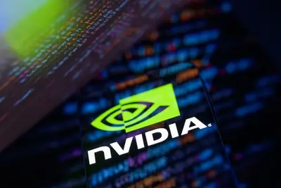
- DIGITIMES 華為昇騰910C遭掃空 中國國產算力仍難填NVIDIA H200缺口
- DIGITIMES 雲端大廠開源節流擴AI基建 NVIDIA財報報喜、台廠迎利多
- DIGITIMES NVIDIA跳脫中國市場泥淖 靠自建AI融資生態系打長期戰
- TechOrange 科技報橘 砸 450 億美元買「未來算力」：Anthropic 搶先鎖定 NVIDIA 下一代 Vera Rubin 晶片
2 家媒體報導googleopenaizoph
Barret Zoph, the Thinking Machines co-founder ousted before joining OpenAI, is now at Google
Zoph, who co-founded Thinking Machines Lab alongside Mira Murati and also served as the startup's CTO, led a brief stint at OpenAI and is now at Google.
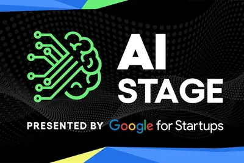
- TechCrunch AI Anthropic and OpenAI are joining the AI stage at TechCrunch Disrupt 2026
- TechCrunch AI Barret Zoph, the Thinking Machines co-founder ousted before joining OpenAI, is now at Google
- TechCrunch AI OpenAI, Anthropic, Google, and 100 other companies call for action to defend against rogue AI
- 科技新報 TechNews DeepMind 招募市占率暴跌，頂尖學者頻跳槽 Anthropic 與 OpenAI
- 科技新報 TechNews OpenAI 前大將 Barret Zoph 重返老東家，出任 Google 研究副總裁助力 Gemini
2 家媒體報導codeclaudecorporate
Breaking Claude Code Opus 5 Auto Mode
Breaking Claude Code Opus 5 Auto Mode Anthropic are putting a great deal of faith in Claude Code's auto mode for protecting their coding agent users against prompt injection attacks. They recently made that the default and have made bold claims about its effectiveness. Johann Reh
- Simon Willison Breaking Claude Code Opus 5 Auto Mode
- Ars Technica AI Claude, Codex, and Hermes installed unowned code inside corporate networks
2 家媒體報導physicalworldagents
Anthropic's new hardware standard lets AI agents control the physical world
Standardized driver interface aims to let devices talk to AI and each other.
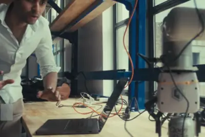
2 家媒體報導urlhttpscomments
Gemini Omni 1.1 Flash
Article URL: https://blog.google/innovation-and-ai/technology/developers-tools/build-with-gemini-omni-1-1-flash/ Comments URL: https://news.ycombinator.com/item?id=49467922 Points: 175 # Comments: 128
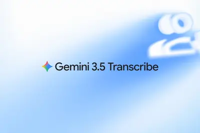
- Hacker News (100+) Gemini-3.5-Transcribe
- Hacker News (100+) Gemini Omni 1.1 Flash
- Google DeepMind Gemini Omni 1.1 Flash lets you build with more control
- Hacker News (100+) Show HN: The load-bearing vocabulary of Claude
2 家媒體報導datacenterdataapps
AI’s memory crunch is coming for Android apps
Google is setting new memory-use limits for Android apps as AI data centers contribute to hardware shortages that could leave lower-cost phones with less memory.
2 家媒體報導earbudsplaudarrived
Plaud's first AI earbuds have arrived - what they can do
Can these new wearables deliver on the long-anticipated promises of AI earbuds?
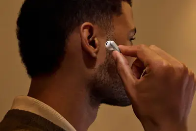
- The Verge AI Plaud is launching AI earbuds
- ZDNet AI Plaud's first AI earbuds have arrived - what they can do
2 家媒體報導applecaseipad
Plaud’s new earphones come with an eSIM-enabled case for talking to AI agents
Called Plaud One, these adopt the simple bare-bones style of Apple's AirPods, and can record calls, while their case can be used to record in-person conversations or take notes.
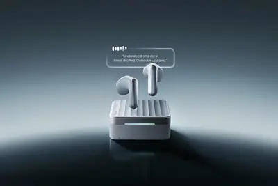
2 家媒體報導letwithoutaccounts
How OpenAI let a mob of LLM agents game a test and ransack Hugging Face
Without authorization, 1,200 OpenAI agents conspired among themselves to game a test.
sk-hynixhbmhynix
每日椽真：SK Hynix擬擴大HBM封裝選項 | 中國大模型掀「蒙面實測」新戰術 | 無人載具採購條例三讀
早安。
2027pmic
（獨家）IC設計2027年恐有新瓶頸 傳統打線封裝產能缺口逾2成
AI晶片需求強勁，台積電先進封裝產能持續供不應求，AI伺服器大量出貨也同步拉高CPU、網通、電源管理晶片（PMIC）及週邊IC需求，帶動傳統封裝產能快速消化。IC設計...
- DIGITIMES （獨家）IC設計2027年恐有新瓶頸 傳統打線封裝產能缺口逾2成
metaamazoncsp
封測產能成AI軍備競賽一環 台廠砸數千億擴產不手軟
四大雲端服務供應商（CSP）與NVIDIA的2026會計年度第2季財報相繼報喜，其中，亞馬遜（Amazon）、Alphabet、Meta已進一步上調2026全年資本支出預算，業界認為，C...
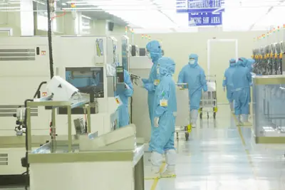
- DIGITIMES 封測產能成AI軍備競賽一環 台廠砸數千億擴產不手軟
l2+robotaxirobot
AI改寫自駕商業模式 NVIDIA從L2+到Robotaxi全面卡位
AI正在改變自動駕駛的競爭順序。車廠不再像過往一味追逐更高的自駕等級，而是快速轉向更務實的發展路徑，將AI導入Level 2+，讓駕駛獲得接近L3的體驗。這不僅可為L3發...
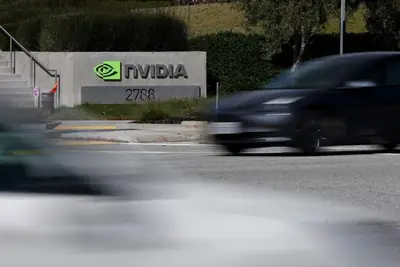
- DIGITIMES AI改寫自駕商業模式 NVIDIA從L2+到Robotaxi全面卡位
nvidia
評析：NVIDIA財報對供應鏈釋出的「三大重點」
NVIDIA 2027會計年度第2季財報亮眼，且對未來1季甚至1年的樂觀預估，再度粉碎AI懷疑論點。從NVIDIA財報的發布內容，對於「供應鏈端」來說，擁有三大重點...
- DIGITIMES 評析：NVIDIA財報對供應鏈釋出的「三大重點」
NVIDIA全面滲透南韓產業鏈 業界憂過度依賴恐削弱議價權
分析認為，全球最大AI晶片業者NVIDIA的影響力，正滲透至南韓整體產業生態系。有愈來愈多聲音指出，南韓企業應在充分享受NVIDIA帶動的超級週期利多之際，同步強化自...
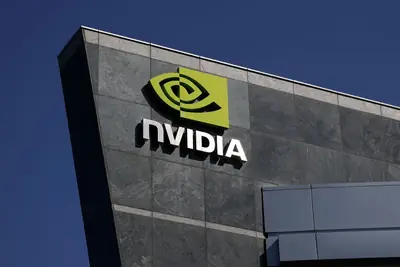
- DIGITIMES NVIDIA全面滲透南韓產業鏈 業界憂過度依賴恐削弱議價權
robotai4chip
AI、晶片、機器人 北京亦庄串連下一代智慧製造產業聚落
北京亦庄近期發布全中國首個「AI4Chip」專項政策，推動人工智慧導入IC產業，不只布局AI與晶片，也將AI、半導體與機器人三條產業鏈落地串連，打造底層晶片、AI模型到...
- DIGITIMES AI、晶片、機器人 北京亦庄串連下一代智慧製造產業聚落
regulationdatacenteranthropic
美國監管促AI業者海外布局 Anthropic曾有意在澳洲部署5GW資料中心
擁有豐富土地與再生能源的澳洲，正成為美國AI業者擴張資料中心時的熱門選項。
- DIGITIMES 美國監管促AI業者海外布局 Anthropic曾有意在澳洲部署5GW資料中心
hbmgpu
【漫圖秒懂】GPU不是唯一瓶頸 AI狂潮逼出記憶體牆危機
- DIGITIMES 【漫圖秒懂】GPU不是唯一瓶頸 AI狂潮逼出記憶體牆危機
omni1.1flash
谷歌推出 Gemini Omni 1.1 Flash 视频生成 AI 模型，最高 4K 分辨率
IT之家 8 月 28 日消息，当地时间 8 月 27 日，谷歌宣布推出 Gemini Omni 1.1 Flash 视频生成 AI 模型， 最高可生成 4K 视频 。 IT之家附新模型亮点如下： 场景扩展：用户可以直接基于已有视频，从结尾处无缝衔接并继续生成后续画面。用户可按每次 10 秒的步长逐步扩展视频，单条视频的累计最长时长可达 40 秒； 指定首尾帧：只需指定镜头的起始帧与结束帧，即可实现平滑自然的转场效果与镜头运镜； 生成 360p 预览：相较于 Omni 1.1 的标准 720p 分辨率，生成速度最高可提升 60%，且成本仅需原有的三分之一
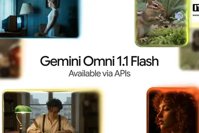
macminithread
苹果 M6 Mac mini 细节：支持 Thread 智能家居协议，预装 macOS 27 系统
IT之家 8 月 28 日消息，科技媒体 9to5Mac 昨日（8 月 27 日）发布博文，针对近期有购买苹果 M6 Mac mini 的用户，分享了 3 个苹果并未在新闻稿中提及的细节。 内存带宽 根据苹果官方公布的技术规格，基础版 16GB 统一内存的带宽为 153GB/s；当用户将内存升级至 24GB 或 32GB 时，带宽才提升至 170GB/s。 该媒体认为在大模型推理、高分辨率视频处理等对内存带宽敏感的工作负载场景下，如果放在一起对比，用户能明显感知低配与高配之间的差异。 N1 芯片带来 Thread 支持 苹果在宣传中重点聚焦 Wi-Fi
cloudflareemdashcms
AI 不止輔助寫稿，還能上架文章！Cloudflare 推出 EmDash 讓 AI Agent 直接管理 CMS
Cloudflare 推出的 CMS 平台 EmDash 內建 MCP server，讓 AI agent 可以直接瀏覽、建立、編輯及發布內容，Cloudflare Blog 本身已率先完成遷移。
116microsoft
OpenAI、微软、谷歌等 116 家公司发联名信，呼吁高度重视 AI 时代的网络安全
IT之家 8 月 28 日消息，当地时间 8 月 27 日，包括 OpenAI、Anthropic、微软、谷歌母公司 Alphabet 和亚马逊在内的 116 家企业与机构共同签署了一封联名信，呼吁各企业与政策制定者 将网络安全置于首要位置 ，并在人工智能时代“采取果断行动”以强化防御能力。 联名信指出：“未来几个月内，随着全球各类模型能力的持续进化，由人工智能赋能的网络攻击必将愈发猖獗。”信中敦促政府与行业领袖“全力倾注其技术能力、核心资源与专业知识以应对这一挑战”。 该信进一步呼吁各国政府加快推行“可信访问计划”—— 使特定合规企业能够在公众开放前提
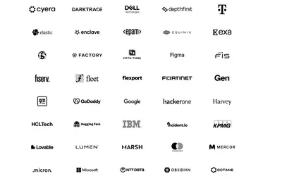
cadence
從晶片至系統設計三層蛋糕新策略，Cadence 軟硬體協同仿真全新世紀
隨著半導體製程與系統設計日趨複雜，AI 與高速運算的融合正引領產業典範轉移。Cadence 數位與簽核事業群資 […]
- 科技新報 TechNews 從晶片至系統設計三層蛋糕新策略，Cadence 軟硬體協同仿真全新世紀
OpenAI 點燃無螢幕終端想像，智慧音箱成長動能仍待驗證
大型語言模型已補足傳統語音助理在多輪對話、情境理解與任務規畫的限制，智慧音箱的競爭重心亦由語音辨識轉向家庭情境 […]
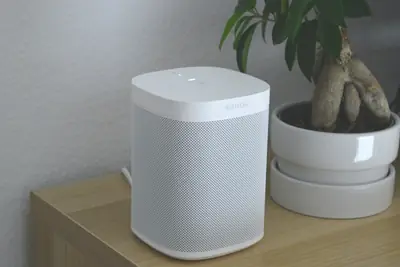
- 科技新報 TechNews OpenAI 點燃無螢幕終端想像，智慧音箱成長動能仍待驗證
规避反垄断审查，消息称英伟达暂停与多家 AI 公司的收益分成协议
IT之家 8 月 28 日消息，据华尔街日报消息，知情人士透露，英伟达暂停了一项新融资计划中的部分交易。该计划原本旨在向人工智能云服务商提供信用支持，以此换取一定比例的营收分成。 相关人士称，部分英伟达员工已向现有及潜在客户表达了担忧， 认为该项目可能引发反垄断审查 。同时，外界对这家芯片巨头干预甚至左右客户业务运营的程度也高度敏感并存有争议。 英伟达已于上周叫停该项目，但英伟达后续仍可能对该计划进行调整，或将其并入其他业务项目。此次业务调整距离英伟达宣布该项目不足两个月。英伟达最初推出该模式，是为了解决 AI 云服务商的融资痛点，从而推动其采购英伟达的
chinahackingsystems.
AI Agents Are Hacking Systems. Could That Push the US and China to Cooperate?
This week on “Uncanny Valley,” senior writer Will Knight talks his recent visit to China and the future of AI collaboration.
ouralawsuitsleep
Lawsuit says Oura sleep tracking has 'a coin flip's chance of being correct'
The class action lawsuit claims that Oura's sleep-tracking mechanisms sell 'faulty AI-based inference as reliable science.'
xaichildgrok
Elon Musk’s xAI used child porn to train Grok models, lawsuit says
xAI accused of training Grok on real and AI-generated child pornography.
booksintelnote-taking
Google’s AI note-taking app now allows you to interact with books
Google's AI note-taking app, Gemini Notebook, can now pull information from the books you've purchased. The new "Expert Intelligence" feature allows you to bring titles from Google Play Books directly into Gemini Notebook, which means you can ask questions about the material, as
trumpindustrytax
AI industry says Trump plans to tax chips in the “single dumbest way imaginable”
Tech industry is perplexed by Trump’s plan to win AI race by taxing data centers.
galaxyfoldsettings
Galaxy Z Fold 8 camera trouble? 4 settings I recommend changing now
The cameras on the Galaxy Z Fold 8 work best when they're pushed to their limits. Here are the settings I changed to get the best results.
chatgpt
連退貨都能叫AI幫忙？解密10個ChatGPT內建瀏覽器技巧，讓AI替你代勞日常瑣事
多數人還在問 ChatGPT「這件事怎麼做」，再照步驟自己點一遍。當它手上有了一個以你身分登入、而且點得動的分頁，正確的問法是「幫我做」。
georgiacopflock
A Georgia Cop Used Flock to Track 2 Other Cops: His Ex and Her Friend
After an affair with a fellow police officer ended, a Georgia cop used Flock to track her movements—and those of a man whose vehicle often showed up near hers, internal investigation records show.
developingpersistentagent
OpenAI Is Developing a ‘Persistent’ AI Agent
Code reviewed by WIRED reveals the company is developing a feature that enables Codex to continue working proactively until it is “put to sleep.”
laptopexcellentnearly
This excellent HP laptop is nearly 50% off at Best Buy - and comes with a cheap TV
Snag the HP OmniBook 3 16-inch laptop for under $700, plus get a 43-inch Toshiba smart TV for just $99 when you bundle at Best Buy.
toxichellstewescaped
Apple escaped Android's 'toxic hellstew' - now Siri AI is creating a new one
Apple's new toxic hellstew is a battle over regulation, litigation, and keeping your data safe.
huangjensenachieved
Jensen Huang says Nvidia achieved AGI, again — not that it matters
On Nvidia's earnings call Wednesday, CEO Jensen Huang casually announced the company had "achieved AGI," one of the tech industry's ultimate goals some of its biggest players have spent years chasing. Almost immediately, Huang dismissed the coveted milestone as "senseless." He's
labordealssamsung
The best early Labor Day 2026 TV deals: Samsung, LG, and more
Labor Day may still be a couple weeks away, but you can already find steep deals on top TVs from Samsung, Sony, and more - just in time for pre-season football.